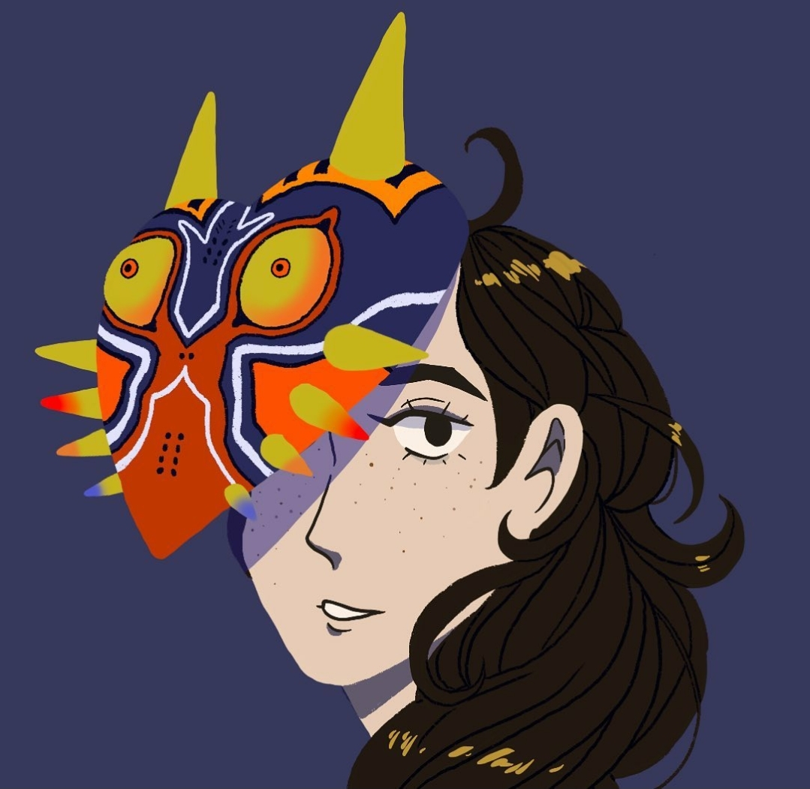
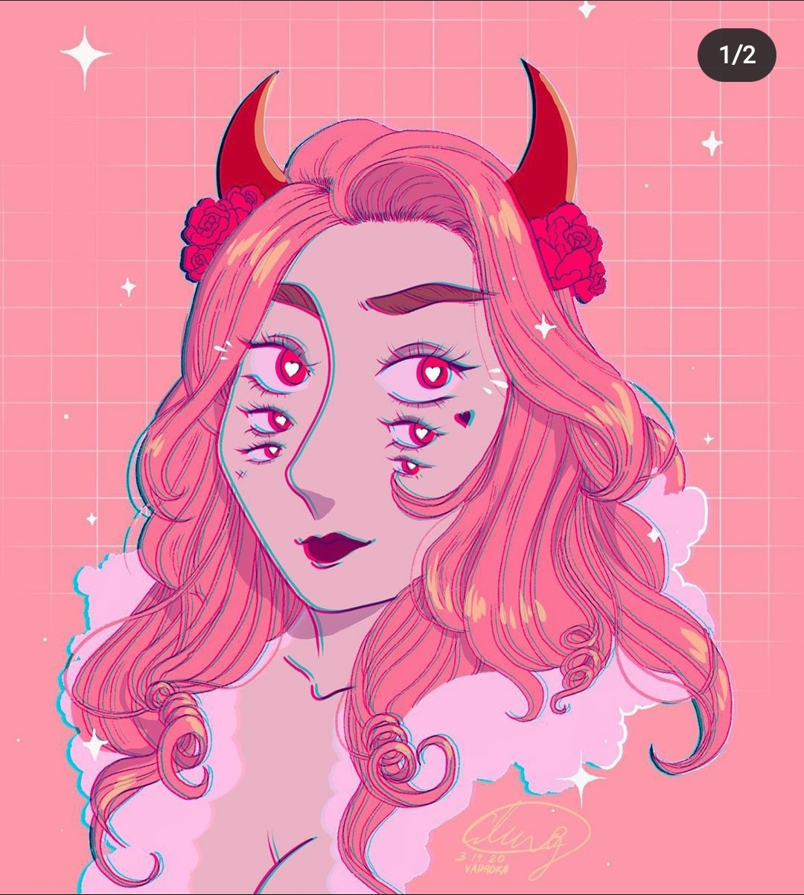

The purpose of this lab is to creat basic HTML web pages with images and links to other pages.
The main challages that happend were: 1. Trying to figure out how to link my webpages on atom but after posting on Slack and getting an example there, I finally linked my pages. Now 2. Was trying to figure out how to link my Instagram link. Because for some reason the twitter link worked fine, but not instagram. I tired to change and teak the code but nothing worked until I moved the links from the top of the page to the bottom of the page, just above the pictures.
I finally got a working page with links and avalibale pictures. Now this page has links to both my Instagram and Twitter pages. My Instagram page has all my art (examples under this), while my twitter not so much. I mainly use it as a moodboard.
 